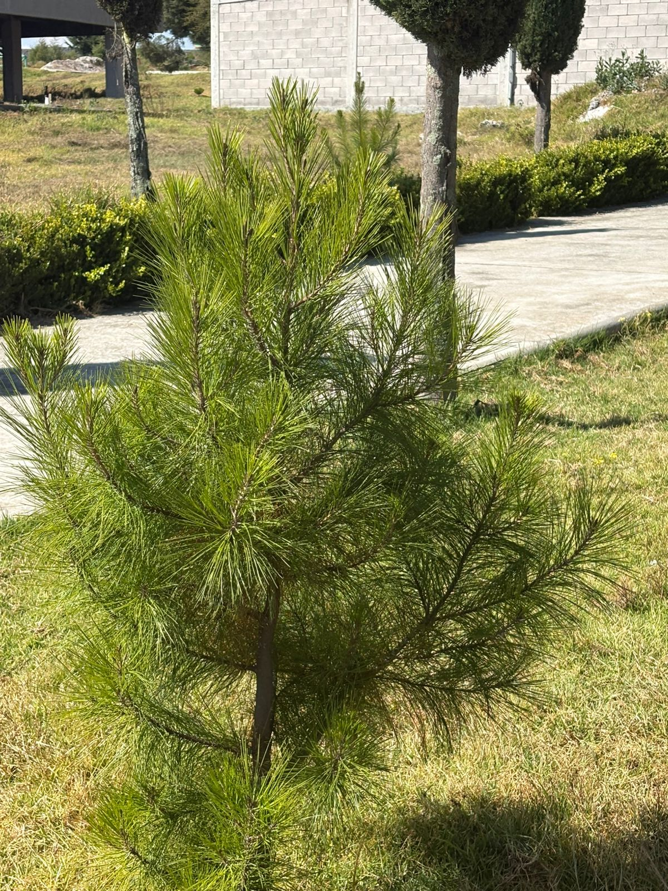
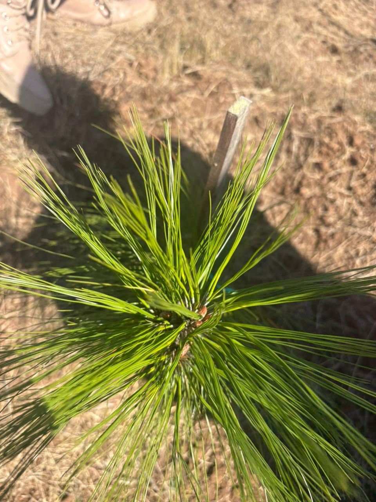
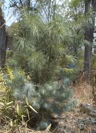
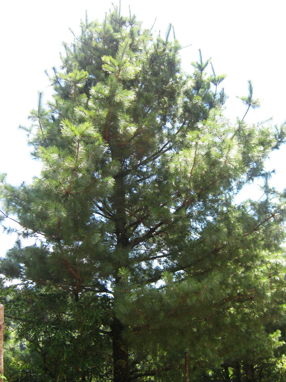
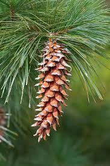
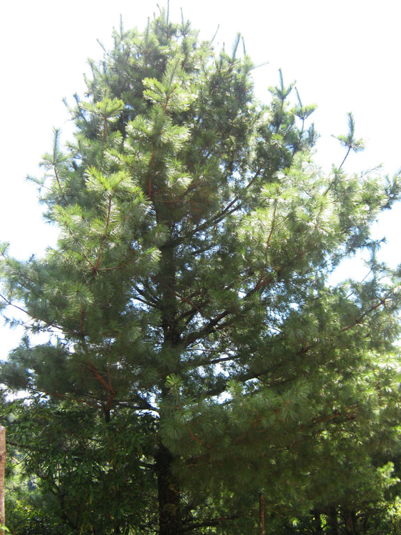
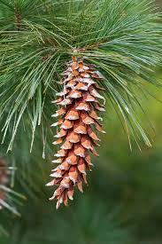

Características del Ayacahuite
El ayacahuite es un árbol de gran tamaño que crece en zonas montañosas. Es conocido por su resistencia y su importancia ecológica.



 



Tiempo de crecimiento: 10 a 15 años.
Clima ideal: Templado-frío.
Cuidados: Suelo húmedo, riego moderado y protección contra vientos fuertes.
Importancia: Conserva el suelo y produce oxígeno.
⬅ Regresar